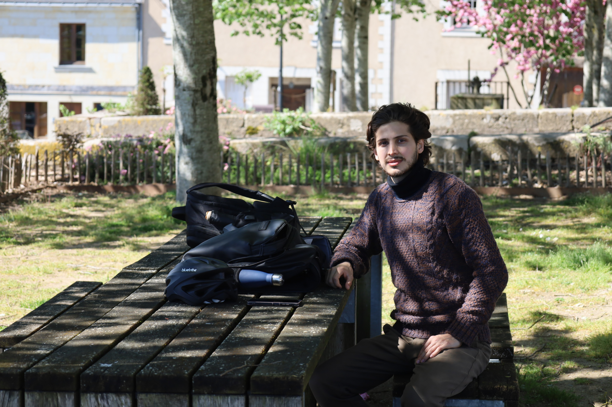

Mousa Rasheed
PhD student in Mathematics, in cotutelle
LAREMA, UMR CNRS 6093, Université d'Angers, France, and Lebanese University
Education
2024–2027
PhD in Mathematics, Université d'Angers and Lebanese University (cotutelle). Supervisor: Abdallah Assi.
2022–2023
Master 2 in Fundamental Mathematics, Lebanese University. Ranked 2nd in the cohort, highest master's thesis grade in the cohort.
2020–2022
Master 1 in Mathematics, Lebanese University.
2018–2020
Licence in Mathematics, Lebanese University.
Research
I work in singularity theory, at the interface of algebraic geometry, commutative algebra and number theory. My thesis, under the supervision of Abdallah Assi, studies quasi-ordinary hypersurfaces and the Abhyankar–Jung theorem through the semigroups attached to them. I also work on plane curves with one place at infinity, where the arithmetic of numerical semigroups describes invariants such as the Milnor and Tjurina numbers and the Kähler differentials.
Papers
-
Semigroup associated with a hypersurface
-
Classification of plane curves of small degrees
Talks and posters
June 2026
Poster: Affine semigroup associated with a hypersurface, JDOC, Nantes.
June 2025
Semigroup associated with a hypersurface, Séminaire des doctorant.es, LAREMA, Angers.
April 2025
Classification of plane curves of small degrees, Séminaire des doctorant.es, LAREMA, Angers.
Sept. 2026
Classification of plane polynomial curves via the difference between Milnor and Tjurina numbers, Doctoral Forum, Lebanese University, Lebanon.
Sept. 2025
Semigroups associated with quasi-ordinary hypersurfaces, Doctoral Forum, Lebanese University, Lebanon.
Conferences, schools and working groups
April 2026
Rencontres Doctorales Lebesgue (RDL), Nantes.
Dec. 2025
Masterclass Introduction aux structures symplectiques décalées, given by Tristan Bozec, Centre Henri Lebesgue, Angers.
May 2025
Complex Hermitian Geometry, Angers.
2024–2025
Working group L²-cohomologie et homologie d'intersection, LAREMA, Angers.
Teaching
2025–2026
Probability, 24 hours of lectures and 36 hours of tutorials, Université Catholique de l'Ouest (UCO), Angers.